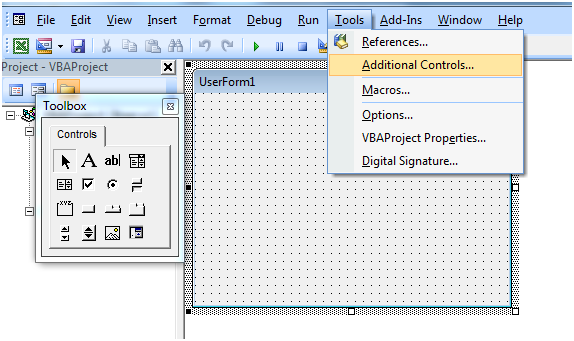
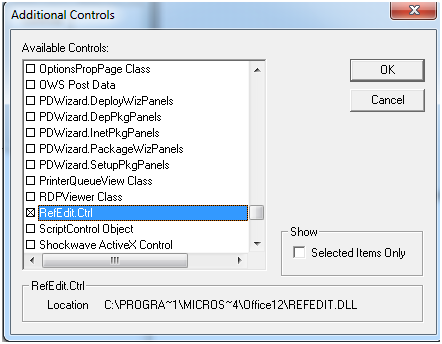
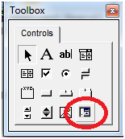

сентября 14, 2015
сентября 14, 2015  admin
admin Элемент управления RefEdit
сентября 14, 2015 admin
Кроме стандартных элементов управления в вашем распоряжении — сотни и тысячи элементов управления, встроенных в Windows, в другие продукты или поставляемые отдельно (в том числе третьими фирмами).
Для того, чтобы можно было разместить их на форме, щелкните правой кнопкой мыши по пустому пространству в ToolBox и выберите пункт Additional Controls — а далее выберите нужный элемент.

Рассмотрим элемент RefEdit

Теперь он расположен на панели ToolBox:

Правда, при применении нестандартных элементов управления необходимо помнить, что при переносе программы (файла Office) на другой компьютер вам потребуется обеспечить на нем наличие необходимых библиотек.
Элемент управления RefEdit предоставляет пользователю возможность выделять на рабочем листе диапазон ячеек. После выделения диапазона элемент управления возвращает его адрес в виде строки, содержащей название листа и абсолютные ссылки на ячейки. Элемент управления RefEdit может быть использован только в формах, которые отображаются модально (т.е. свойству ShowModal которых присвоено значение True).
Элемент управления RefEdit в окне формы имеет вид кнопки, рядом с которой расположено текстовое поле. Когда пользователь щелкает на этой кнопке, экранная форма сворачивается, после чего можно использовать курсор для выделения диапазона ячеек на рабочем листе. Когда требуемый диапазон будет выделен, необходимо щелкнуть на кнопке, которая отображается в окне свернутой формы. Форма разворачивается до исходного размера, а в текстовом поле отображаются название рабочего листа и адрес ячеек выделенного диапазона. В кодах программы эта строка может быть считана как значение свойства Value элемента управления RefEdit. Если пользователь не выделил диапазон, свойство Value возвращает пустую строку.
Применение элемента управления RefEdit рассмотрено на примере демонстрационной программы, показанной ниже. Эта программа отображает форму с элементом управления RefEdit и кнопкой Format. Пользователь должен щелкнуть на элементе управления RefEdit и выделить диапазон ячеек рабочего листа. Если вы возвратитесь к форме и щелкните на кнопке Format, то шрифт выделенных ячеек станет красным, появится окно сообщения с указанием адреса выделенного диапазона, и затем форма закроется.
Чтобы создать экранную форму, выполните перечисленные ниже действия.
1. Выберите команду Insert>User Form, чтобы добавить в проект новую экранную форму.
2. Присвойте свойству Name экранной формы значение RefEditDemo, а свойству Caption — значение RefEdit Demo.
3. Добавьте к форме элемент управления RefEdit и оставьте заданные по умолчанию значения свойств этого элемента без изменений.
4. Добавьте к форме кнопку CommandButton. Присвойте ее свойству Caption значение Format.
5. Дважды щелкните на кнопке, чтобы открыть ее процедуру обработки события Click в окне редактирования кодов.
6. В теле процедуры наберите код из листинга
Листинг Код формы RefEditDemo
Private Sub CommandButtonl_Click()
Dim s As String
Dim r As Range
s = RefEdit1.Value
‘ Проверка, выделен ли диапазон ячеек
If s = “” Then
MsgBox “Пожалуйста, выделите диапазон”
Else
‘Форматирование ячеек выделенного диапазона
Set r = Range(s)
r.Font.Color = RGB(255, 0, 0)
‘Отображение адреса диапазона
MsgBox “Был отформатирован диапазон ” & s
‘Закрытие формы
Me.Hide
End If
End Sub
Код экранной формы и является кодом всей программы, поэтому нам остается лишь создать процедуру для отображения этой формы. Создайте новую процедуру в модуле VBA (назовите ее, например, TestRefEditDemo) и наберите в ее теле следующий код:
Dim frm As New RefEditDemo
frm.Show
Чтобы протестировать программу, выполните перечисленные ниже действия.
1. Запустите процедуру для отображения формы.
2. Щелкните на элементе управления RefEdit, чтобы свернуть форму и выделить диапазон ячеек рабочего листа. Желательно выделить диапазон, в ячейках которого содержатся какие-нибудь данные, чтобы можно было увидеть изменения в их форматировании.
3. Щелкните на кнопке, отображаемой в окне свернутой формы, чтобы вернуться к обычному размеру экранной формы.
4. Щелкните на кнопке Format, чтобы отформатировать выделенный диапазон и отобразить окно сообщения.
5. Закройте окно сообщения, экранная форма будет закрыта автоматически.
Пример можно скачать здесь